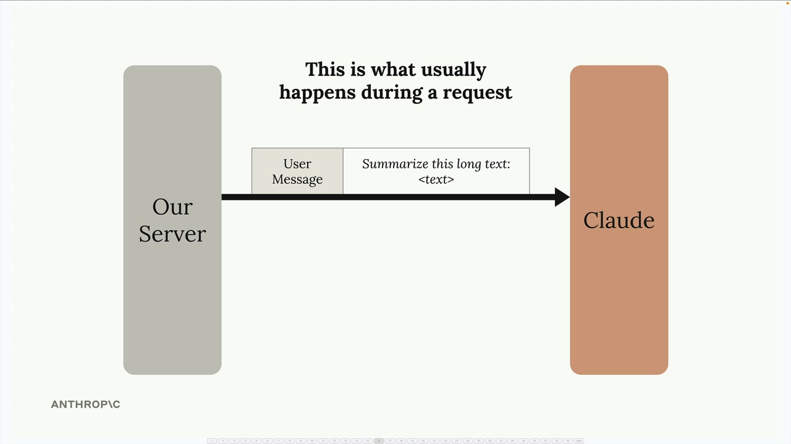
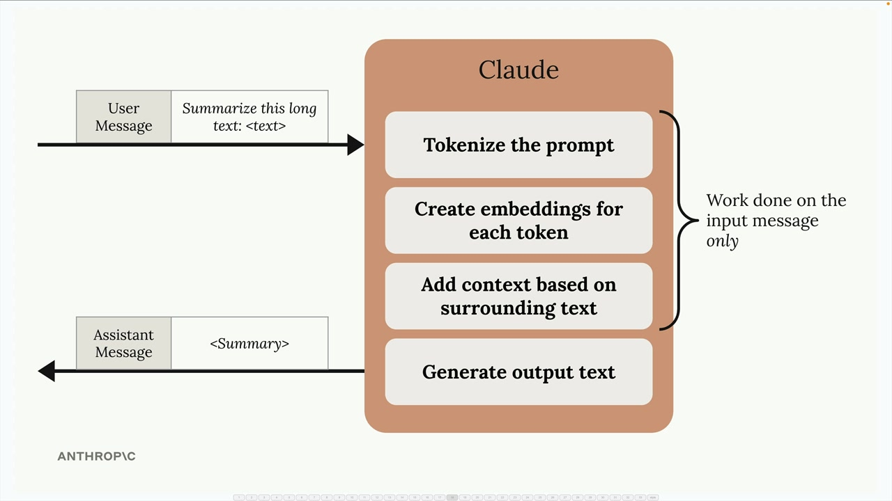
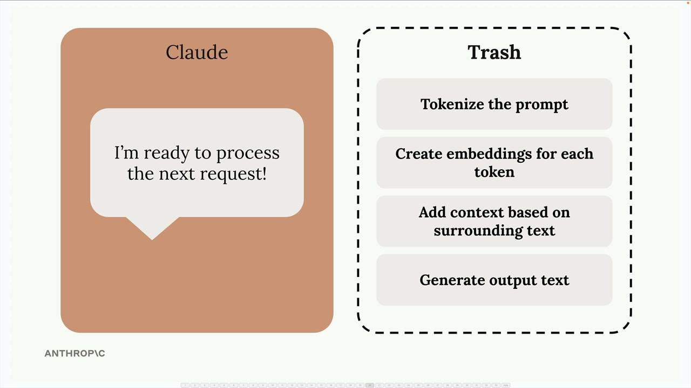
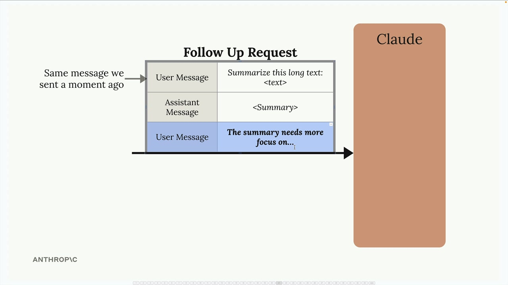
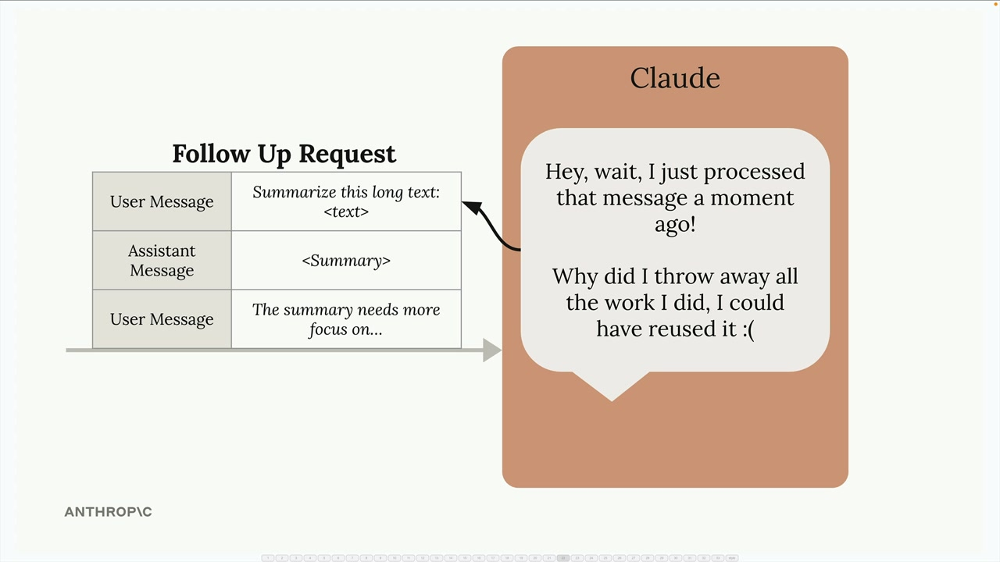
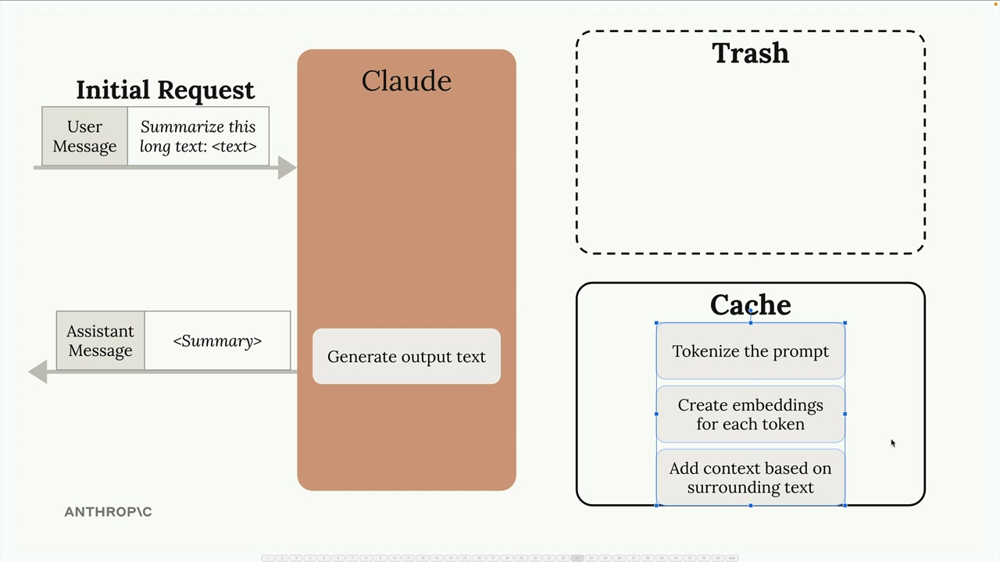
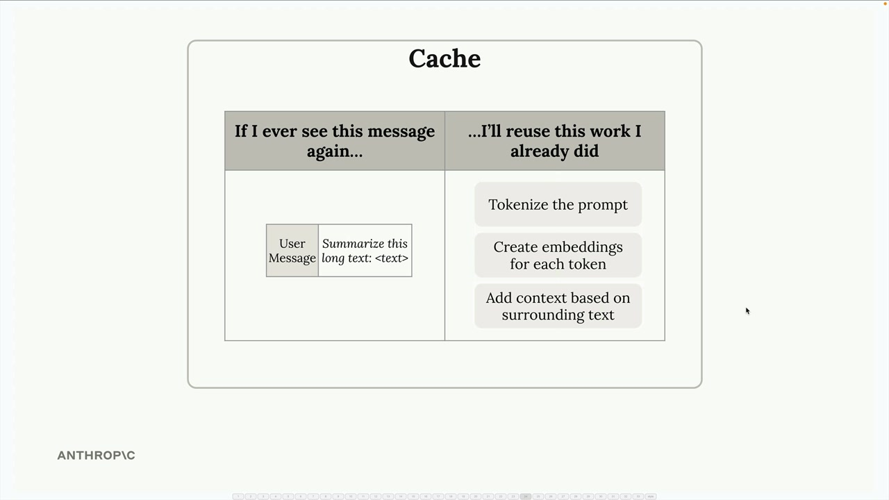
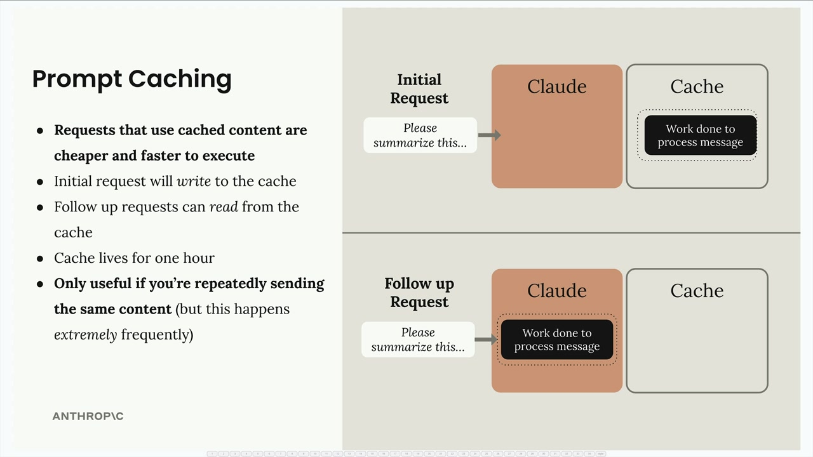

프롬프트 캐싱
프롬프트 캐싱은 이전 요청의 연산 작업을 재사용하여 Claude의 응답 속도를 높이고 텍스트 생성 비용을 절감하는 기능입니다. 각 요청 후 모든 처리 작업을 버리는 대신, Claude는 비슷한 내용을 다시 보낼 때 이를 저장하고 재사용할 수 있습니다.
Claude가 요청을 처리하는 일반적인 방식
프롬프트 캐싱을 이해하려면 먼저 캐싱이 활성화되지 않은 일반적인 요청에서 어떤 일이 일어나는지 살펴보겠습니다.

Claude에 메시지를 보내면 Claude는 즉시 응답을 생성하지 않습니다. 대신 입력에 대해 방대한 양의 전처리 작업을 수행합니다:

- 프롬프트를 더 작은 조각으로 토크나이즈
- 각 토큰에 대한 임베딩 생성
- 주변 텍스트를 기반으로 맥락 추가
- 그런 다음에야 실제 출력 텍스트 생성
응답을 보낸 후, Claude는 이 모든 연산 작업을 버립니다 - 토크나이제이션, 임베딩, 맥락 분석 모두 폐기됩니다.

작업 폐기의 문제점
이는 동일한 내용을 포함하는 후속 요청을 보낼 때 비효율적이 됩니다. 예를 들어, 동일한 긴 텍스트의 요약을 Claude에게 다듬어 달라고 요청하는 대화에서:

Claude는 방금 분석한 내용에 대해 동일한 전처리 작업을 반복해야 합니다. Claude는 스스로 이렇게 생각할 수 있습니다: "방금 그 메시지를 처리하고 했던 작업을 모두 버렸는데 - 재사용할 수 있었을 텐데!"

프롬프트 캐싱이 이 문제를 해결하는 방법
프롬프트 캐싱은 전처리 작업을 버리는 대신 저장함으로써 이 워크플로를 변경합니다:

초기 요청을 보내면 Claude는 모든 일반적인 전처리를 수행하지만 결과를 버리는 대신 캐시에 저장합니다. 캐시는 "이 메시지를 다시 보면 이미 한 작업을 재사용하겠다"고 말하는 조회 테이블처럼 작동합니다.

주요 이점 및 제한 사항

프롬프트 캐싱은 여러 가지 장점을 제공합니다:
- 더 빠른 응답: 캐시된 콘텐츠를 사용하는 요청이 더 빠르게 실행됩니다
- 낮은 비용: 요청의 캐시된 부분에 대해 더 적은 비용을 지불합니다
- 자동 최적화: 초기 요청이 캐시에 쓰고, 후속 요청이 캐시에서 읽습니다
그러나 염두에 두어야 할 중요한 제한 사항이 있습니다:
- 캐시 지속 시간: 캐시된 콘텐츠는 한 시간 동안만 유지됩니다
- 제한된 사용 사례: 동일한 콘텐츠를 반복적으로 보낼 때만 유용합니다
- 높은 빈도 요구 사항: 동일한 콘텐츠가 요청에 매우 자주 나타날 때 가장 효과적입니다
프롬프트 캐싱은 동일한 대용량 문서에 대해 여러 질문을 하는 문서 분석 워크플로나, 특정 측면을 다듬는 동안 기본 콘텐츠가 일정하게 유지되는 반복적인 편집 작업과 같은 시나리오에서 가장 잘 작동합니다.